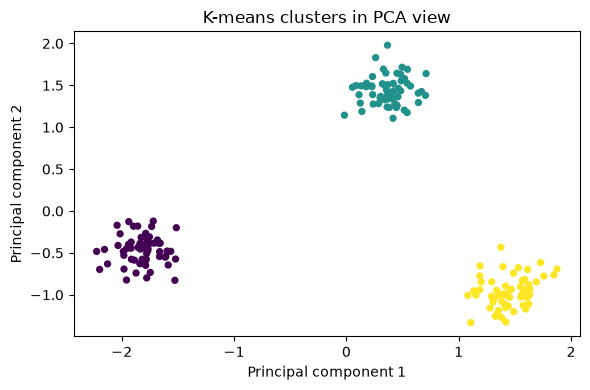

Learn NumPy by doing · Notebook 17
PCA and k-means project
From NumPy building blocks: the finale
Capstone / expert practice
60–90 minutes
Prerequisites: 00–14
Notes · 1 The last notebook of the course, and the second capstone. We build two classic data-science tools from scratch with NumPy alone: principal component analysis, which finds the directions in which data varies most, and k-means, which groups nearby observations. No scikit-learn: every step is broadcasting, reductions, linear algebra and indexing you already know. The picture at right is the goal in miniature: three groups of points, each with a centroid ring. By the end you will have a checked, reusable k-means loop and a 2-D view of 3-D data.
What you will learn
Two classic tools, built by hand
1
Standardise
Put every feature on a common scale, safely.
2
PCA
Find the main directions of variation with SVD.
3
K-means
Assign, update, repeat, with broadcasting.
4
Check
Test invariants and edge cases, not lucky signs.
NumPy course · 17 PCA and clustering project
2
Notes · 2 The notebook's goal: standardise features, implement PCA with SVD, and build a checked k-means loop. PCA finds directions of variation; clustering groups nearby observations. Both draw on almost everything in the course: axis reductions from 03 and 06, broadcasting from 05, SVD from 10, and the numerical care of 13. The fourth card matters as much as the algorithms: a home-made implementation is only trustworthy when its invariants are tested, such as reconstruction error, orthonormal directions, and an objective that never increases.
The workflow
From 3 features to 3 clusters
Step 1
Scale
Standardise: each feature to mean 0, std 1
Step 2
SVD
Covariance directions as rows of Vt
Step 2
Project
Keep two directions: shape (180, 2)
Step 3
K-means
Assign, update, repeat until stable
Step 3
Evaluate
Best of 5 seeds, sizes, tests, plot
Each stage asserts an invariant: mean 0 and std 1, exact SVD reconstruction, orthonormal directions, a non-increasing objective.
NumPy course · 17 PCA and clustering project
3
Notes · 3 This is the map for the session. The data are 180 observations with three numeric features, drawn around three hidden centres. Stage one standardises the features. Stage two takes the SVD of the standardised table; its right singular vectors are the eigenvectors of the covariance matrix, so this is the same PCA you may have seen defined through covariance, computed more stably. Stage three keeps the first two directions, giving a 2-D view. Stage four runs k-means, and stage five chooses the best run, reports cluster sizes, runs edge-case tests and plots the clusters in the PCA view. In the notebook, k-means clusters the standardised 3-D table Z; the 2-D projection is used for the picture.
Step 1 · Standardise
Put features on one scale
rng = np.random.default_rng(21)
centers = np.array([[-4., -3., 0.], [0., 4., 4.],
[4., -2., -3.]])
X = np.concatenate([rng.normal(loc=center,
scale=0.55, size=(60, 3))
for center in centers])
feature_mean = X.mean(axis=0)
feature_std = X.std(axis=0)
safe_std = np.where(feature_std == 0, 1, feature_std)
Z = (X - feature_mean) / safe_std
print("Observations, features:", Z.shape)
Observations, features: (180, 3)
Rows and columns
180 observations, 3 features: three groups of 60.
z = (x − mean) / std
The (3,) mean and std broadcast down every row.
Guard constants
A zero std would divide by zero, so it becomes 1.
NumPy course · 17 PCA and clustering project
4
Notes · 4 Each row is an observation and each column a feature. Distances, and therefore both PCA and k-means, are dominated by whichever feature has the largest numbers, so we standardise: subtract each column's mean and divide by its standard deviation. A constant column has standard deviation zero; np.where swaps that zero for one, so the column simply becomes zeros instead of NaN. The notebook asserts that every column of Z has mean 0 (within 1e-12) and standard deviation 1. Note the caveat: here the whole dataset is used for exploration; in a predictive workflow you fit the mean and std on training data only. Try it: multiply one raw feature by 100 and compare distances before and after standardisation; before, that feature swamps the others, after, the distances are unchanged by the rescaling.
Step 2 · PCA through SVD
One SVD gives the directions
Z = U diag(s) Vt
Rows of Vt are the principal directions.
s² is variance
Squared singular values, normalised, give each share.
Signs are arbitrary
Test reconstruction and variance, never a sign.
U, s, Vt = np.linalg.svd(Z, full_matrices=False)
components = Vt[:2]
embedding = Z @ components.T
explained_ratio = s ** 2 / np.sum(s ** 2)
reconstructed_Z = embedding @ components
print("Explained variance ratios:", explained_ratio)
print("Retained fraction:", explained_ratio[:2].sum())
print("Reconstruction MSE:",
np.mean((Z - reconstructed_Z) ** 2))
Explained variance ratios: [0.6245 0.3675 0.008 ]
Retained fraction: 0.9920000540856623
Reconstruction MSE: 0.007999945914337746
NumPy course · 17 PCA and clustering project
5
Notes · 5 PCA rotates centred data toward the directions of greatest variance. Because Z is already centred, its singular value decomposition does all the work: the rows of Vt are orthonormal principal directions, ordered by singular value, and each squared singular value is proportional to the variance along its direction. Keeping two rows compresses three features into two. The notebook asserts that U times s times Vt rebuilds Z exactly, and that the two kept components are orthonormal, components @ components.T equals the 2 by 2 identity. The sign of each direction is arbitrary, so a different machine may flip one; that is why the tests check reconstruction and variance rather than signs. Try it: keep one component, then all three. With one, the error rises to the dropped share, about 0.376 (0.3675 plus 0.008); with all three it falls to essentially zero.
Step 2 · Explained variance
Two directions hold almost all
0.6245
0.3675
0.008
0.992
kept by PC1 and PC2 together
0.008
reconstruction MSE: exactly the share PC3 held
PC1 · kept
PC2 · kept
PC3 · dropped
NumPy course · 17 PCA and clustering project
6
Notes · 6 These bars are the real explained variance ratios from the notebook: 0.6245, 0.3675 and 0.008. The first two directions carry 99.2 percent of the variation, so a 2-D picture loses almost nothing; the third is essentially the 0.55 noise within each group. There is a neat identity here: because every standardised column has variance 1, the mean squared reconstruction error equals the share of variance you dropped, and the notebook prints 0.0079999 against a ratio of 0.008. Read a chart like this whenever you choose how many components to keep: look for the point where the bars collapse.
Step 2 · Project to 2-D
Project down, then back up
embedding = Z @ components.T
(180, 3)
@
(3, 2)
=
(180, 2)
reconstructed_Z = embedding @ components
(180, 2)
@
(2, 3)
=
(180, 3)
Inner sizes match, 3 with 3 and 2 with 2. Each point becomes two coordinates; the dashed copy is close to Z, but not exact.
NumPy course · 17 PCA and clustering project
7
Notes · 7 Each bar is one column, so you can see the shapes. Projecting multiplies the 180 by 3 table by the transposed components, a 3 by 2 matrix whose columns are the two kept directions; the result, the orange embedding, gives every observation two coordinates, the ones plotted later. Going back multiplies by the 2 by 3 components and lands in the original feature space, drawn dashed because it is an approximation: the part of each point along the dropped third direction is gone. Because the directions are orthonormal, no inverse is needed: the transpose undoes the rotation. With all three directions the round trip is exact, which is Exercise 1.
Step 3 · K-means
The heart of the k-means loop
def kmeans(data, k, seed=0, max_iter=100):
rng = np.random.default_rng(seed)
centers = data[rng.choice(len(data), k,
replace=False)].copy()
for _ in range(max_iter):
squared = ((data[:, None, :] -
centers[None, :, :]) ** 2).sum(axis=-1)
labels = squared.argmin(axis=1)
# ... record inertia; stop if labels repeat
for group in range(k):
members = data[labels == group]
if len(members):
centers[group] = members.mean(axis=0)
Start from data
k distinct rows, chosen by a seeded generator.
Assign
One broadcast computes every point-to-center distance.
Update
Each center moves to its members' mean; an empty group keeps its center.
NumPy course · 17 PCA and clustering project
8
Notes · 8 This is an excerpt of the notebook's kmeans function; the full version first validates its input (a finite 2-D table, 1 ≤ k ≤ number of rows, max_iter ≥ 1), records the inertia of every pass in a history list, breaks when the labels equal the previous pass, and after the loop reassigns once more so the returned labels always match the returned centers. K-means alternates two steps: assign each observation to its nearest center, then replace each center by the mean of its group. It minimises a local squared-distance objective and depends on where it starts, so the result depends on the seed. The if len(members) guard handles empty clusters by keeping the previous center instead of computing the mean of nothing, which would be NaN. Cluster numbers are arbitrary labels.
Step 3 · Assign, update, repeat
Two moves until nothing changes
Once
Initialise
k random rows become the first centers.
Move 1
Assign
Every point takes the label of its nearest center.
Move 2
Update
Every center moves to the mean of its points.
Repeat with the new centers
Stop
Labels equal the last pass, or max_iter is reached.
Inertia only falls
Each move can only lower the squared distances.
NumPy course · 17 PCA and clustering project
9
Notes · 9 This is the whole algorithm. Inertia is the total squared distance from each point to its assigned center. Assigning each point to its nearest center cannot increase it, because each point picks the smallest available distance. Moving each center to its group's mean cannot increase it either, because the mean is the point that minimises squared distance to a group. So inertia never rises, and since there are finitely many labelings the loop must stop. The notebook turns this argument into a test: np.diff(history) must be at most 1e-9 everywhere. What the loop does not promise is the best answer overall: it finds a local minimum that depends on the starting rows, which is why we try several seeds.
Step 3 · The distance tensor
Every point to every center
data[:, None, :]
(180, 1, 3)
−
centers[None, :, :]
(1, 3, 3)
=
differences
(180, 3, 3)
point × center × feature
differences
(180, 3, 3)
** 2 · sum(axis=-1)
squared
(180, 3)
argmin(axis=1)
labels
(180,)
180 × 3 × 3 is only 1,620 numbers. With a million points and many centers, compute in chunks instead.
NumPy course · 17 PCA and clustering project
10
Notes · 10 This is the broadcasting trick from notebook 05 doing real work. Inserting a new axis with None turns the data into shape (180, 1, 3) and the centers into (1, 3, 3). Aligned from the right, the length 1 axes stretch, so the subtraction produces every point minus every center: shape (180, 3, 3), read as point, center, feature. Squaring and summing the last axis gives a (180, 3) table of squared distances, and argmin along axis 1 picks the nearest center for each point, giving 180 labels. The notebook's own warning applies: this materialises the full three-dimensional tensor, which is fine for small data but needs chunking or a more memory-efficient formula for large datasets.
Step 3 · Evaluate
Best of five seeds, then look
runs = [kmeans(Z, 3, seed=seed)
for seed in range(5)]
cluster_centers, labels, inertia, history = min(
runs, key=lambda result: result[2])
print("Inertia:", inertia, "cluster sizes:",
np.bincount(labels, minlength=3))
assert np.all(np.diff(history) <= 1e-9)
Inertia: 14.683571012424357 cluster sizes:
[60 60 60]
Tiny test: 4 points, 2 clean pairs, inertia 1.0
Duplicate points, k = 3: inertia 0, no crash

NumPy course · 17 PCA and clustering project
11
Notes · 11 Because k-means finds only a local minimum, the notebook runs it from five seeds and keeps the run with the smallest final inertia. The winner splits the 180 observations into three groups of exactly 60, which matches how the data were generated, and the history assertion confirms inertia never rose. Two small tests probe edge cases: four points forming two tight pairs must split into those pairs with inertia exactly 1.0, and four identical points with k equal to 3 must reach inertia 0, which exercises the empty-cluster guard. The plot colours each point by its label in the 2-D PCA view: three compact, well separated groups. Try it: compare k equal to 2, 3 and 4. Inertia keeps falling as k grows, so a lower inertia alone does not prove a better clustering.
The idea to remember
Test invariants,
not lucky outputs.
Signs flip and cluster numbers shuffle. Reconstruction error, orthonormal directions and a falling inertia do not.
Notes · 12 Pause here. PCA and k-means each fit in a dozen lines of NumPy; the expertise is in knowing what must always be true of the result. A principal direction may come back with the opposite sign, and cluster 0 on one run may be cluster 2 on another, so tests that compare exact values are fragile. Tests of properties, such as an exact reconstruction with all components, components @ components.T equal to the identity, and a non-increasing history, hold on every machine and every seed.
Practice · Exercises
Two exercises on PCA and labels
Exercise 1
Rebuild Z using all PCA components
Expected: equal to Z within 1e-12. First row:
[-1.1351 -0.5949 -0.4598]
full_reconstruction = (Z @ Vt.T) @ Vt
Exercise 2
One count per cluster, empty ones included
Expected: shape (3,), summing to 180:
[60 60 60]
cluster_counts = np.bincount(
labels, minlength=3)
NumPy course · 17 PCA and clustering project
13
Notes · 13 Ask the audience to attempt both before revealing the code lines, which match the reference solutions. Exercise 1: all three orthonormal principal directions span the full feature space, so projecting onto them and projecting back reconstructs Z exactly, up to rounding; compare this with the 0.008 error from keeping two. Exercise 2: np.bincount counts how many observations carry each non-negative label. Without minlength=3, an empty last cluster would silently shorten the result to length 2, so minlength keeps a slot for every cluster.
Practice · Independent challenge
Reusable, swept and tested
Challenge
Turn the notebook into a small, honest toolkit
Wrap standardisation and PCA in reusable functions.
Compare k = 2 to 6 across five seeds, plot inertia, and justify a cluster count without using the true labels.
Describe two limits: scaling, initialisation, non-spherical groups or outliers.
Tests to add
A constant feature column
A single cluster, k = 1
Duplicate points
max_iter = 1
Both exercise checks print passed
NumPy course · 17 PCA and clustering project
14
Notes · 14 The challenge has no supplied check: decide the expected result of every test before you run it. A constant column should standardise to zeros, not NaN. With k = 1 the single center is the overall mean, so the inertia equals the total sum of squares. Duplicate points with more clusters than distinct points leave empty clusters, which must keep their centers. max_iter = 1 must still return labels that match the returned centers. For choosing k, plot the best inertia for each k and look for the elbow where improvement flattens; remember that inertia always falls as k grows. Then restart the kernel and run all cells.
Course milestones
00–04
Create a score table, select rows and calculate totals unaided.
05–09
Clean a numeric dataset and produce grouped summaries.
10–15
Explain correctness, accuracy, shape and memory tradeoffs.
16–17
Complete both project extensions and explain their assumptions.
Notebook 17 of 17 · the finale
Course complete
Next: finish both project extensions, then practise on unfamiliar problems of your own. Expertise grows from repeated work and debugging, not from one course.
Notes · 15 Congratulations: this is the end of the 18-notebook course. Walk through the four milestones from the course guide and ask learners to rate themselves honestly against each one: after 00 to 04, create a score table, select rows and calculate totals unaided; after 05 to 09, clean a numeric dataset and produce grouped summaries; after 10 to 15, explain correctness, numerical accuracy, shape and memory tradeoffs; after 16 and 17, complete both project extensions and explain their assumptions. Where to go next: the official numpy.linalg.svd reference at numpy.org/doc/stable/reference/generated/numpy.linalg.svd.html and the broadcasting guide at numpy.org/doc/stable/user/basics.broadcasting.html, both linked from this notebook; the course guide also recommends the beginner guide, the copies and views guide and the random Generator reference on numpy.org. Areas outside this course include NumPy's C API, custom dtypes, and distributed or GPU computing.